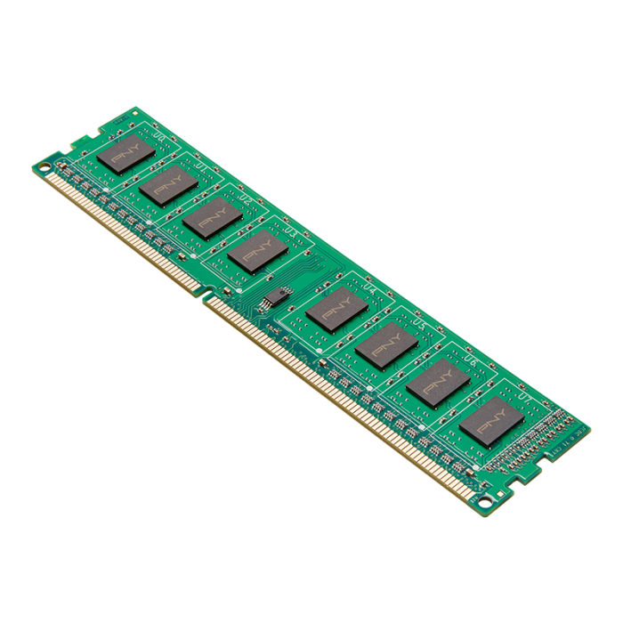
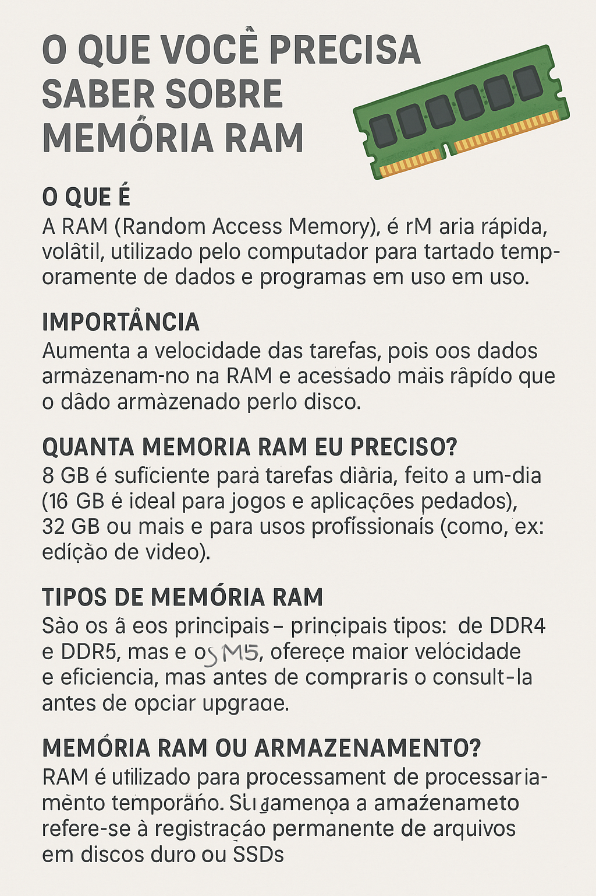

🧠 Tudo o que você precisa saber sobre Memória RAM
O que é Memória RAM?
A memória RAM (Random Access Memory, ou Memória de Acesso Aleatório) é um tipo de memória volátil utilizada pelos computadores e outros dispositivos eletrônicos para armazenar temporariamente dados que estão sendo usados ou processados. Isso inclui desde o sistema operacional até os programas e arquivos abertos no momento.
⚠️ Volátil significa que seu conteúdo é apagado assim que o computador é desligado.
Para que serve a RAM?
A RAM é responsável por permitir que o processador acesse rapidamente os dados e instruções necessárias para executar tarefas. Quanto mais RAM você tem, mais programas podem funcionar simultaneamente com fluidez.
Tipos de Memória RAM
DRAM (Dynamic RAM) – É o tipo mais comum nos PCs.
SRAM (Static RAM) – Mais rápida, usada em caches de processadores.
DDR (Double Data Rate) – Evoluiu com os anos:
* DDR1
* DDR2
* DDR3
* DDR4
* DDR5 (mais atual e rápida)

Fatores importantes na escolha de uma RAM
Fator Descrição
Capacidade 4 GB, 8 GB, 16 GB, 32 GB ou mais. Influencia diretamente na quantidade de tarefas simultâneas.
Frequência Medida em MHz (ex: 2400 MHz, 3200 MHz, 5600 MHz). Quanto maior, melhor a velocidade.
Latência (CL) Indica o atraso em ciclos de clock. CL mais baixo = menor atraso.
Tipo (DDR3/4/5) Depende da compatibilidade com a placa-mãe e o processador.
Canal (Single/Dual/Quad) Usar dois módulos idênticos em dual-channel melhora o desempenho.
Memória RAM e Desempenho
Mais RAM = mais programas abertos sem travamentos.
RAM lenta ou insuficiente = gargalo no sistema.
Jogos, edição de vídeo, multitarefa pesada exigem mais RAM.
Sinais de pouca RAM
Travamentos frequentes
Lentidão ao alternar entre janelas
Uso de disco muito alto (Windows usando paginação)
Dicas gerais
Sempre verifique a compatibilidade com a placa-mãe.
Prefira módulos idênticos para dual-channel.
Em PCs modernos, 8 GB é o mínimo, 16 GB é ideal para a maioria, e 32 GB ou mais para uso avançado (edição, jogos pesados, VM).
📦 Imagens para download
Agora, vou gerar imagens explicativas em .png para você usar nos seus estudos, apresentações ou projetos.
Imagens incluídas:
Esquema de funcionamento da RAM
Tipos de DDR com comparação
Diferença entre Single Channel e Dual Channel
Dicas de escolha de RAM